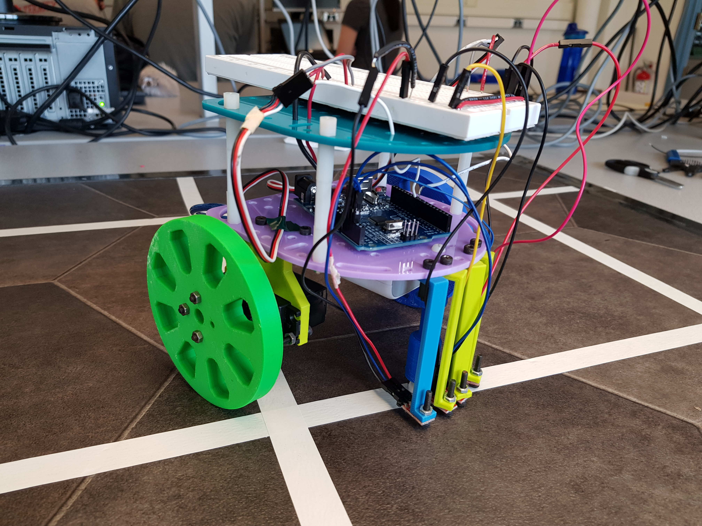

The goal of this lab is to make the robot to follow the line and traverse in a figure 8. The robot is controlled using the reading from line sensor in order to make decisions regarding following lines and turning. We first created a simpler iteration that followed straight lines, and after a successful implementation we modified the code so the robot could follow turns, and ultimately traverse the figure 8.
There are four line sensors attached to the front of the robot. Two line sensors are in the middle and two line sensors are on the outer side. For this part, we only need the middle ones for controlling the robot. The middle line sensors are on top of a white tape for following the straight line and making corrections. If either of them detects a value above the white tape threshold value, it means that the the robot is leaning towards one side. In this situation, the robot will make a slight correction by speeding up one of the servo by how much the robot is out of bound. The magnitude of how much the robot is out of bound is determined by the difference between the right middle sensor and the left middle sensor.
void move(){
// Read analog values from two center sensors
right_pid_val = analogRead(right_pid); // signal from center right sensor
left_pid_val = analogRead(left_pid); // signal from center left sensor
error = left_pid_val - right_pid_val; // Positive position to right of line
// Correct robot's driving direction according to position error
if (abs(error) <= ERROR_RANGE){
left_servo.write(SERVO_L_FORWARD_MAX);
right_servo.write(SERVO_R_FORWARD_MAX);
}
// Robot is too right of line
else if (error > ERROR_RANGE) {
// Adjust left
error_magnitude = abs(error)/(float)ERROR_RANGE;
left_servo.write(SERVO_L_FORWARD_MAX - error_magnitude*SERVO_L_INCR_FORWARD);
right_servo.write(SERVO_R_FORWARD_MAX + error_magnitude*SERVO_R_INCR_FORWARD);
}
// Robot is too left of line
else if (error < -(ERROR_RANGE)) {
// Adjust right
error_magnitude = abs(error)/(float)ERROR_RANGE;
left_servo.write(SERVO_L_FORWARD_MAX + error_magnitude*SERVO_L_INCR_FORWARD);
right_servo.write(SERVO_R_FORWARD_MAX - error_magnitude*SERVO_R_INCR_FORWARD);
}
delay(10);
}
The two outer sensors are used to determine which direction to turn: if either sensor detects white, then the robot accordingly executes 90 degree turn in that direction. In the case where the robot sensors a white line in both the left and right direction (as in the vertex of a T), the robot defaults to right.
For the purpose of a figure eight, the robot was hard coded to go right for the first three turns and left for the second three turns. This implementation was an extension of the previous “Following Straight Lines” so the application of the inner sensors remains the same as specified above.
Declaring variables in the beginning
Servo left_servo;
Servo right_servo;
#define SERVO_BRAKE 90
#define SERVO_L_FORWARD_MAX 100.0
#define SERVO_R_FORWARD_MAX 80.0
#define SERVO_L_INCR_FORWARD -2.0
#define SERVO_R_INCR_FORWARD 2.0
// Thresholds for each sensor to determine when over a line
#define RIGHT_PID_THRESH 200
#define LEFT_PID_THRESH 200
#define RIGHT_TURN_THRESH 600
#define LEFT_TURN_THRESH 600
#define ERROR_RANGE 100
//pins
const int LW = 9; // Servo1
const int RW = 10; // Servo2
const int right_turn = A3;
const int right_pid = A2;
const int left_pid = A1;
const int left_turn = A0;
// Control variables for line following
float error = 0;
float error_magnitude = 0;
int counter = 0;
// Line sensor values
int right_pid_val = 0;
int left_pid_val = 0;
int right_turn_val = 0;
int left_turn_val = 0;
// Servo turn values
float servo_turn_value[] = {SERVO_R_FORWARD_MAX, 0 ,SERVO_L_FORWARD_MAX, SERVO_L_FORWARD_MAX};
int servo_turn_delays [] = {300, 0, 300, 900};
The main move method
void move(int direction){
// Turn if requested
if (direction != 1){
// Start turning until off the current line
// Read values from center line sensors
// While center sensors are not over another line, continue turning
while((right_pid_val> RIGHT_PID_THRESH) && (left_pid_val> LEFT_PID_THRESH)){
}
} // done turning
// Reset intersection variables
right_turn_val = 0;
left_turn_val = 0;
counter = 50;
// After turn is complete, drive forward to the next intersection, making corrections as necessary
// while-loop contains all line-following code
while(right_turn_val < RIGHT_TURN_THRESH || left_turn_val < LEFT_TURN_THRESH){
// Wait 50 while-loops for robot to be clear of starting intersection
// Don't start searching for an intersection until the intersection sensors are clear of black line
if (counter > 0){
right_turn_val =3000; //set so that while loop continues
left_turn_val = 3000; //set so that while loop continues
counter = counter - 1;
}
else {
right_turn_val = analogRead(right_turn); //signal from outer right sensor
left_turn_val = analogRead(left_turn); //signal from outer left sensor
}
//following straight line
// Read analog values from two center sensors
right_pid_val = analogRead(right_pid); // signal from center right sensor
left_pid_val = analogRead(left_pid); // signal from center left sensor
error = left_pid_val - right_pid_val; // Positive position to right of line
// Correct robot's driving direction according to position error
if (abs(error) <= ERROR_RANGE){
left_servo.write(SERVO_L_FORWARD_MAX);
right_servo.write(SERVO_R_FORWARD_MAX);
}
// Robot is too right
else if (error > ERROR_RANGE) {
// Adjust left
}
// Robot is too left of line
else if (error < -(ERROR_RANGE)) {
// Adjust right
}
delay(10);
}
left_servo.write(SERVO_BRAKE);
right_servo.write(SERVO_BRAKE);
}
Set up the hardware and all I/Os
void setup() {
// put your setup code here, to run once:
Serial.begin(9600);
right_servo.attach(RW);
left_servo.attach(LW);
// Set up the select pins as outputs:
pinMode(A0, INPUT);
digitalWrite(A0, HIGH);
pinMode(A1, INPUT);
digitalWrite(A1, HIGH);
pinMode(A2, INPUT);
digitalWrite(A2, HIGH);
pinMode(A3, INPUT);
digitalWrite(A3, HIGH);
right_servo.write(SERVO_BRAKE);
left_servo.write(SERVO_BRAKE);
delay(1000);
}
Main Code to run repeatedly
void loop() {
// move in figure-8
move(2); // forward one block
delay(50);
}
The Milestone 1 Work Distribution is as follows:
- On 9/7, Joyce, Nathalia, Priya, and Vini worked on in lab rebuild the robot.
- On 9/10, Joyce, Nathalia, and Vini worked on rebuilding the robot and started the code.
- On 9/10, Nathalia went to open office hours and finished rebuilding the robot.
- On 9/14, Joyce, Nathalia, Priya, and Vini worked on in lab to complete the milestone.
The Lab Report Work Distribution is as follows:
- Joyce: Introduction and code explanations
- Priya: Section Write Ups
- Nathalia: Pictures and Videos
The website work distribution is as follows:
- Nathalia: Website Set Up and Milestone 1